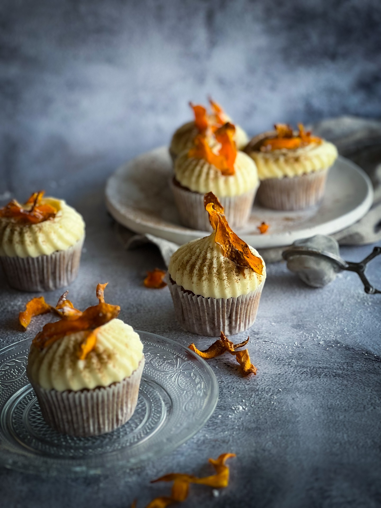

CuPcAkE

Ingredients:
- 1 cup all-purpose flour
- 1/2 cup sugar
- 1/2 cup butter, softened
- 2 eggs
- 1 tsp vanilla extract
- 1 1/2 tsp baking powder
- 1/4 cup milk
- A pinch of salt
Instructions:
- Preheat oven:Preheat your oven to 350°F (175°C). Line a cupcake tin with liners.
- Make the batter: Cream together butter and sugar. Add eggs one at a time, followed by vanilla extract. Gradually mix in the flour, baking powder, and salt. Add milk and mix until smooth.
- Bake: Fill the cupcake liners about 2/3 full with batter. Bake for 18-20 minutes or until a toothpick comes out clean.
- Cool and frost: Let the cupcakes cool completely before frosting with buttercream or your favorite frosting.